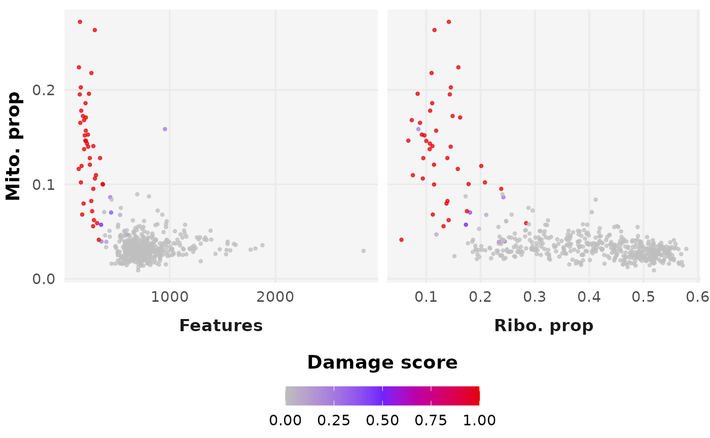

DamageDetective Overview
Compiled: July 16, 2025
Source:vignettes/detection-vignette.Rmd
detection-vignette.RmdPackage description
The goal of DamageDetective is to simplify the process
of making informed and reproducible damaged cell filtering decisions
during the pre-processing of single cell RNA sequencing data.
This requires only a count matrix to run and outputs a damage score ranging from 0 (viable, intact cell) to 1 (broken, non-viable cell). There is an option for automatic filtering using the default upper threshold damage score of 0.5.
We will demonstrate briefly using an example dataset provided upon package installation.
Prerequisites
Libraries
For an improvement in speed, load the presto package in
addition to DamageDetective.
install.packages("remotes")
remotes::install_github("madsen-lab/valiDrops")
library(DamageDetective)
library(presto)Input data formatting
- Counts should be provided in the form of a compressed,
column-oriented sparse matrix (
dgCMatrix) inR.
# View formatting
class(test_counts)
#> [1] "dgCMatrix"
#> attr(,"package")
#> [1] "Matrix"- Counts should have gene sets formatted according to HGCN standard,
i.e.,
MT-...rather thanENSG....
# View formatting
head(rownames(test_counts))
#> [1] "MIR1302-10" "FAM138A" "OR4F5" "RP11-34P13.7" "RP11-34P13.8"
#> [6] "AL627309.1"> See [biomaRt](https://bioconductor.org/packages/release/bioc/html/biomaRt.html) for conversion assistance or use the automated `Seurat` functions for working with alignment output, [ReadMtx](https://satijalab.org/seurat/reference/readmtx).-
DamageDetectivesupports data of human and mouse, specified using theorganismparameter. To analyse a non-standard organism, provide a list with patterns that matches the set of mitochondrially encoded genes and ribosomal genes and genes with a confirmed, permanent nuclear residence.
Example using humans as organism of interest
For more information on data preparation, view the package articles on our website
Parameter selection
select_penalty
While detect_damage requires only a count matrix as
input, additional parameters control aspects of the function’s
computations. Of these, we recommend ribosome_penalty be
adjusted for each dataset using the select_penalty
function.
This parameter ranges from 0 to 1 and adjusts the likelihood of ribosomal RNA loss during simulation, correcting for observed discrepancies where ribosomal RNA is retained more than expected based on transcript abundance.
penalty <- select_penalty(
count_matrix = test_counts,
max_penalty_trials = 3 # Shortened for the vignette
)
#> Testing penalty of 0.1...
#> Testing penalty of 0.15...
#> Testing penalty of 0.2...
#> Maximum penalty trials reached (3). Stopping.
penalty
#> [1] 0.2
filter_threshold
DamageDetective offers the upper threshold 0.5 as the
damage score above which cells are filtered, where values greater than
0.5 reflect more permissive filtering and values closer to 0 reflect
more stringent filtering. We recommend the default, but suggest that if
adjustments are made, they are informed by the output detect_damage
plots, generate_plot = TRUE.
For more information on parameters, please view the function documentation available on our website under References.
Running damaged cell detection
Damage detection is run using the count matrix and ribosomal penalty
as inputs. Below, we have additionally specified for
filter_counts parameter to be TRUE. This will use the
default filter_threshold and return the filtered count
matrix that can be used immediately for the remainder of
pre-processing.
# Perform damage detection
detection_results <- detect_damage(
count_matrix = test_counts,
ribosome_penalty = penalty,
display_plot = FALSE,
filter_counts = TRUE
)
#> Clustering cells...
#> For a (much!) faster implementation of the Wilcoxon Rank Sum Test,
#> (default method for FindMarkers) please install the presto package
#> --------------------------------------------
#> install.packages('devtools')
#> devtools::install_github('immunogenomics/presto')
#> --------------------------------------------
#> After installation of presto, Seurat will automatically use the more
#> efficient implementation (no further action necessary).
#> This message will be shown once per session
#> Simulating damage...
#> Computing pANN...
# View the resulting count matrix
dim(detection_results$output)
#> [1] 32738 459
# View the plot
detection_results$plot
Session Information
#> R version 4.5.1 (2025-06-13)
#> Platform: x86_64-pc-linux-gnu
#> Running under: Ubuntu 24.04.2 LTS
#>
#> Matrix products: default
#> BLAS: /usr/lib/x86_64-linux-gnu/openblas-pthread/libblas.so.3
#> LAPACK: /usr/lib/x86_64-linux-gnu/openblas-pthread/libopenblasp-r0.3.26.so; LAPACK version 3.12.0
#>
#> locale:
#> [1] LC_CTYPE=C.UTF-8 LC_NUMERIC=C LC_TIME=C.UTF-8
#> [4] LC_COLLATE=C.UTF-8 LC_MONETARY=C.UTF-8 LC_MESSAGES=C.UTF-8
#> [7] LC_PAPER=C.UTF-8 LC_NAME=C LC_ADDRESS=C
#> [10] LC_TELEPHONE=C LC_MEASUREMENT=C.UTF-8 LC_IDENTIFICATION=C
#>
#> time zone: UTC
#> tzcode source: system (glibc)
#>
#> attached base packages:
#> [1] stats graphics grDevices utils datasets methods base
#>
#> other attached packages:
#> [1] future_1.58.0 Matrix_1.7-3 DamageDetective_2.0.15
#>
#> loaded via a namespace (and not attached):
#> [1] RColorBrewer_1.1-3 jsonlite_2.0.0 magrittr_2.0.3
#> [4] spatstat.utils_3.1-4 farver_2.1.2 rmarkdown_2.29
#> [7] fs_1.6.6 ragg_1.4.0 vctrs_0.6.5
#> [10] ROCR_1.0-11 spatstat.explore_3.4-3 rstatix_0.7.2
#> [13] htmltools_0.5.8.1 broom_1.0.8 Formula_1.2-5
#> [16] sass_0.4.10 sctransform_0.4.2 parallelly_1.45.0
#> [19] KernSmooth_2.23-26 bslib_0.9.0 htmlwidgets_1.6.4
#> [22] desc_1.4.3 ica_1.0-3 plyr_1.8.9
#> [25] plotly_4.11.0 zoo_1.8-14 cachem_1.1.0
#> [28] igraph_2.1.4 mime_0.13 lifecycle_1.0.4
#> [31] pkgconfig_2.0.3 R6_2.6.1 fastmap_1.2.0
#> [34] fitdistrplus_1.2-4 shiny_1.11.1 digest_0.6.37
#> [37] patchwork_1.3.1 Seurat_5.3.0 tensor_1.5.1
#> [40] RSpectra_0.16-2 irlba_2.3.5.1 textshaping_1.0.1
#> [43] ggpubr_0.6.1 labeling_0.4.3 progressr_0.15.1
#> [46] spatstat.sparse_3.1-0 httr_1.4.7 polyclip_1.10-7
#> [49] abind_1.4-8 compiler_4.5.1 proxy_0.4-27
#> [52] withr_3.0.2 backports_1.5.0 carData_3.0-5
#> [55] fastDummies_1.7.5 ggsignif_0.6.4 MASS_7.3-65
#> [58] tools_4.5.1 lmtest_0.9-40 httpuv_1.6.16
#> [61] future.apply_1.20.0 goftest_1.2-3 glue_1.8.0
#> [64] nlme_3.1-168 promises_1.3.3 grid_4.5.1
#> [67] Rtsne_0.17 cluster_2.1.8.1 reshape2_1.4.4
#> [70] generics_0.1.4 gtable_0.3.6 spatstat.data_3.1-6
#> [73] class_7.3-23 tidyr_1.3.1 data.table_1.17.8
#> [76] sp_2.2-0 car_3.1-3 spatstat.geom_3.4-1
#> [79] RcppAnnoy_0.0.22 ggrepel_0.9.6 RANN_2.6.2
#> [82] pillar_1.11.0 stringr_1.5.1 spam_2.11-1
#> [85] RcppHNSW_0.6.0 later_1.4.2 splines_4.5.1
#> [88] dplyr_1.1.4 lattice_0.22-7 survival_3.8-3
#> [91] deldir_2.0-4 tidyselect_1.2.1 miniUI_0.1.2
#> [94] pbapply_1.7-2 knitr_1.50 gridExtra_2.3
#> [97] scattermore_1.2 xfun_0.52 matrixStats_1.5.0
#> [100] stringi_1.8.7 lazyeval_0.2.2 yaml_2.3.10
#> [103] evaluate_1.0.4 codetools_0.2-20 tibble_3.3.0
#> [106] cli_3.6.5 uwot_0.2.3 xtable_1.8-4
#> [109] reticulate_1.42.0 systemfonts_1.2.3 jquerylib_0.1.4
#> [112] Rcpp_1.1.0 globals_0.18.0 spatstat.random_3.4-1
#> [115] png_0.1-8 spatstat.univar_3.1-4 parallel_4.5.1
#> [118] pkgdown_2.1.3 ggplot2_3.5.2 dotCall64_1.2
#> [121] listenv_0.9.1 viridisLite_0.4.2 scales_1.4.0
#> [124] ggridges_0.5.6 e1071_1.7-16 SeuratObject_5.1.0
#> [127] purrr_1.1.0 rlang_1.1.6 cowplot_1.2.0